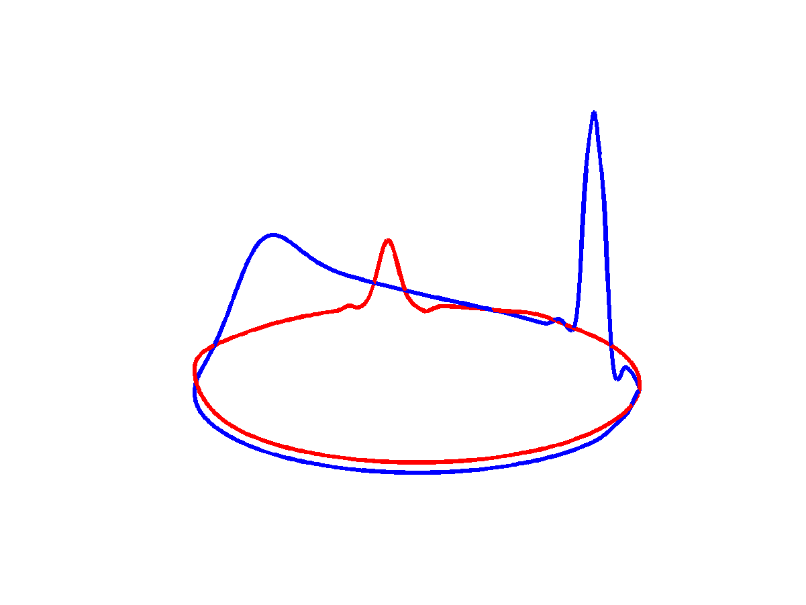

FECGSYN is an open-source toolbox, feel free to contribute!
FECGSYN is being constantly updated. Fellow researchers and collaborators are more than welcome to contribute with their own code.

There are many ways to contribute to the FECGSYN:
- Fork it. Feel free to fork the repository on the project's main page (how to fork a repo).
- Create a pull request. We welcome novel algorithms and improvements to the FECGSYN toolbox. We strongly believe that open-source is the way to go with NI-FECG analysis. After forking our repo, simply submit a pull request (). Please make sure your code is well documented and included in the correct file structure (See Documentation)
- Eeww bugs! In case you in encounter a bug and cannot figure out the solution, please have a look on the opened issues before creating a new bug issue.
- Pitch in your new ideas for future releases by suggesting an enhancement
-> If you have any doubts, do not hesitate to contact us
Collaborative research has various benefits, here are some of those:
- enable other researchers to contribute, debug and build on your work
- advertise your research, published algorithms are linked in the Documentation
- ensure reproducibility of your results
The current version of the FECGSYN was developed thanks to the following contributors:
Fernando Andreotti (
)
Joachim Behar (
)
Julien Oster (
)
Gari D. Clifford (
)
Mohsan Alvi
Sebastian Zaunseder (
)
Felix Gräßer
Reza Sameni (
)